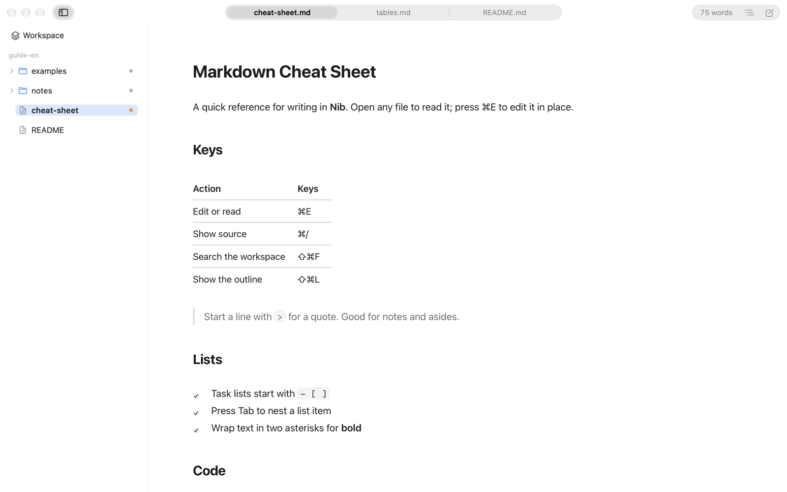

Lector y editor de Markdown de código abierto para Mac
Abre un .md. Léelo como una página.
Renderizado en cuanto se abre. Pulsa ⌘E para editar en el sitio. Se guarda tal como lo dejaste.
Lector y editor de Markdown de código abierto para Mac
Renderizado en cuanto se abre. Pulsa ⌘E para editar en el sitio. Se guarda tal como lo dejaste.

Nib es una app de Markdown gratuita y de código abierto para Mac que abre los archivos renderizados, como un documento, en lugar de como código. Pulsa ⌘E para editar en el sitio: solo la línea en la que estás muestra su Markdown, igual que en Typora. Al guardar solo se escriben tus cambios, así que el archivo queda limpio para git. Recarga los archivos que cambian otros programas, mantiene cada documento como una pestaña en una sola ventana y busca en carpetas enteras. App nativa, unos 8 MB, macOS 15 o posterior.
Mientras lees, es solo una página.

Cambia una palabra y git diff muestra una palabra.
Planes de agentes de programación. Informes de scripts. Documentación de herramientas de compilación. Casi siempre solo los lees y, de vez en cuando, corriges una línea.
Cuando un terminal, un script o un agente reescribe un archivo, la página abierta se actualiza sola.
Los archivos del Finder, del terminal o de un enlace se juntan en una sola ventana. ⌘1–⌘9 para cambiar.
Los archivos modificados llevan un punto naranja; los nuevos, uno verde. Desaparecen en cuanto haces commit.
⇧⌘O abre por nombre. ⇧⌘F busca en todos los archivos y salta a la línea. 2500 archivos en menos de 0,25 s.
Cierra la última ventana y Nib sale del Dock, pero sigue lista. El siguiente archivo se abre en unos 0,15 s.
Las pestañas que llevas tiempo sin mirar liberan su memoria y despiertan donde las dejaste.

Lo que buscan los usuarios de Typora está aquí.
Se guarda en name.assets/ junto al archivo, enlazada con una ruta relativa. Respeta typora-copy-images-to.
El texto con formato de navegadores, Google Docs y Lark se convierte en Markdown limpio.
CommonMark y GitHub Flavored Markdown. Tab sangra las listas.
⇧⌘L para el esquema. F8 atenúa todo menos este párrafo. F9 mantiene tu línea centrada.
PDF, o un único archivo HTML con las imágenes incrustadas, listo para enviar.
Claro, oscuro o papel cálido, o cualquier tema de Typora. Fuentes, espaciado y atajos los cambias tú.
Typora marcó el estándar de la edición en el sitio. MarkEdit es un editor de código fuente nativo y rápido. Obsidian es todo un sistema de notas. Nib es para leer Markdown y corregirlo cuando haga falta.
| Nib | Typora | MarkEdit | Obsidian | |
|---|---|---|---|---|
| Abre un archivo como | Página renderizada | Editor con vista previa en vivo | Código fuente resaltado | Editor con vista previa en vivo |
| Dónde viven los archivos | En cualquier parte | En cualquier parte | En cualquier parte | Dentro de un vault |
| Estado de git en la barra lateral | ✓ | — | — | Con un plugin |
| Interfaz | Interfaz nativa, núcleo CodeMirror | Electron | Interfaz nativa, núcleo CodeMirror | Electron |
| Plataformas | Mac | Mac · Windows · Linux | Mac | Mac · Windows · Linux · iOS · Android |
| Precio · Licencia | Gratis · GPL-3.0 | De pago · propietaria | Gratis · MIT | Gratis · propietaria |
Nib no está notarizado por Apple. Permítelo una vez al abrirlo por primera vez.
Abre Nib.dmg y arrastra Nib a la carpeta Aplicaciones.
Ábrelo y haz clic en Aceptar. Después, en Ajustes del Sistema › Privacidad y seguridad, haz clic en Abrir de todos modos.
Selecciona un .md en el Finder, pulsa ⌘I, elige Nib en Abrir con y haz clic en Cambiar todo.
Requiere macOS 15 o posterior. App universal para Apple silicon e Intel.
Puedes cambiar cualquiera en Ajustes.
| Edición / lectura | ⌘E |
| Código fuente | ⌘/ |
| Apertura rápida | ⇧⌘O |
| Buscar en el espacio de trabajo | ⇧⌘F |
| Barra lateral | ⌃⌘S |
| Esquema | ⇧⌘L |
| Concentración / máquina de escribir | F8F9 |
| Cambiar de pestaña | ⌘1–⌘9 |
| Reabrir pestaña cerrada | ⇧⌘T |
Lo que más se pregunta.
Nib edita Markdown en el sitio igual que Typora: solo la línea en la que estás muestra su sintaxis. Es gratuito, de código abierto bajo la GPL-3.0 y nativo para Mac. A diferencia de Typora, abre los archivos primero en vista de lectura; pulsa ⌘E para editar. También puede usar temas de Typora.
Haz de Nib la app predeterminada para los archivos .md y luego haz clic en la ruta del archivo en tu terminal o ábrelo desde el Finder. Se abre renderizado, en una pestaña de la ventana que ya tienes, y se recarga solo cuando el agente reescribe el archivo. Añade la carpeta del proyecto a la barra lateral para ver qué archivos cambiaron desde el último commit.
Solo donde editas. Al guardar se escriben tus cambios y todo lo demás se conserva byte a byte, incluidos los finales de línea y las líneas en blanco. Nib no añade metadatos ni crea archivos ocultos.
Sí. Pon el archivo CSS del tema y su carpeta en ~/Library/Application Support/Nib/themes y elígelo en Ajustes. La vista de lectura usa el tema completo; el editor toma sus colores y fuentes. Nib lee el formato, pero no incluye temas de Typora.
Sí. Nib es gratuito y de código abierto bajo la GPL-3.0. No hay cuenta ni nada que comprar.
Nib no está notarizado por Apple. Ábrelo una vez y cierra el aviso; luego ve a Ajustes del Sistema › Privacidad y seguridad y haz clic en Abrir de todos modos. Solo hace falta hacerlo una vez.
Todavía no. Los bloques de código marcados como math o mermaid se muestran como código.